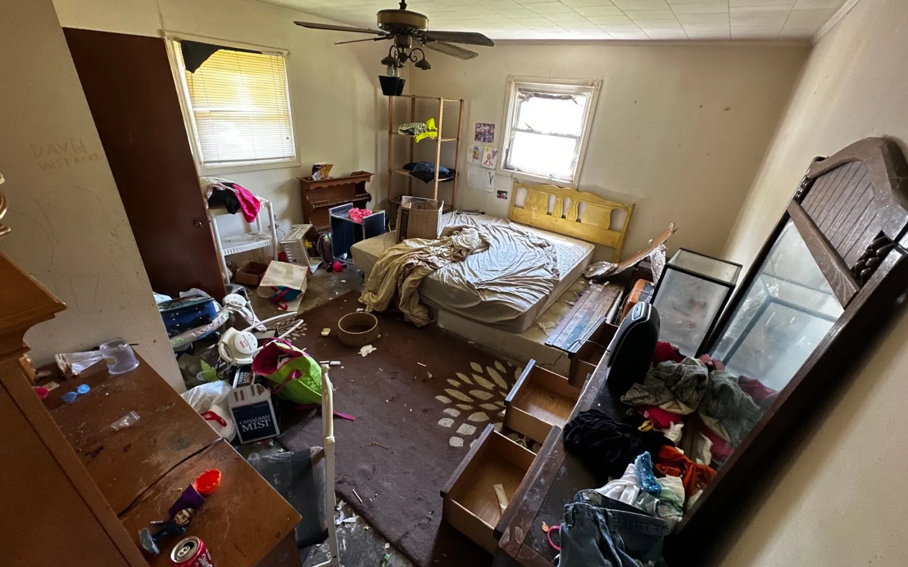

Who owns the house now?
Review the deed, survivorship language, will, and estate circumstances with a North Carolina attorney or the Clerk of Superior Court.
Inherited property help
Short answer: Start by confirming who owns the property and who has legal authority to sign. Then review title, estate debts, taxes, liens, and any required court steps before comparing an as-is sale, repairs and listing, renting, or keeping the house.
Short answer: You can sell inherited property in North Carolina after ownership and signing authority are clear. The deed, will, estate file, family agreement, liens, and title work determine who must participate and what needs to happen before closing.
Review the deed, survivorship language, will, and estate circumstances with a North Carolina attorney or the Clerk of Superior Court.
Identify mortgages, liens, taxes, estate debts, required signatures, court authority, belongings, and access before choosing a timeline.
Compare the likely net outcome, repair work, cleanout, holding costs, timing, and family workload—not just the headline sale price.
If belongings are part of the problem, read the cleanout and furniture guide.

Confirm ownership and signing authority first. Then have the title, estate, debts, liens, taxes, and required paperwork reviewed before accepting an offer or setting a closing date.
Yes, once the people with authority agree and title can be conveyed. An as-is sale can reduce repair and cleanout work, but it does not skip estate, disclosure, contract, or closing requirements.
It depends on who owns the property and what authority exists. The deed, will, estate file, and any court orders matter. Ask a North Carolina attorney about the specific property.
Official starting point: The North Carolina Judicial Branch estates guide explains estate administration and notes that land and houses often pass outside the probate estate unless a will says otherwise or a sale is needed to pay estate debts.
Estate, probate, tax, and title questions should be reviewed with the appropriate professional. America Home Buyers LLC can discuss a property purchase option, but this page is not legal or tax advice.
By Toby Russell, founder of America Home Buyers LLC. Updated .
Local property reviews: Thomasville, Lexington, Winston-Salem, Greensboro and High Point. Discuss your property.